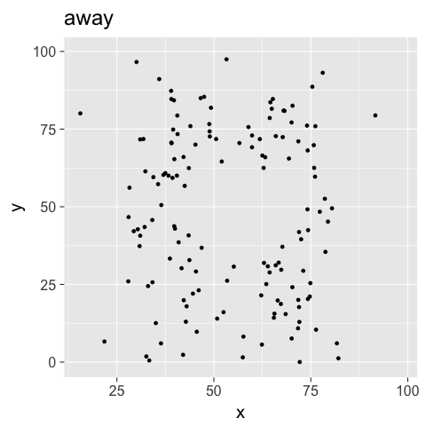

TD01 - datasauRus
Aurélien Ginolhac
20/9/2017
datasaurus
- check if you have the package
datasauRusinstalled
library(datasauRus)- should return nothing. If
there is no package called ‘datasauRus’appears, it means that the package needs to be installed. Use this:
install.packages("datasauRus")Explore the dataset
Since we are dealing with a tibble, we can just type
datasaurus_dozenonly the first 10 rows are displayed.
| dataset | x | y |
|---|---|---|
| dino | 55.3846 | 97.1795 |
| dino | 51.5385 | 96.0256 |
| dino | 46.1538 | 94.4872 |
| dino | 42.8205 | 91.4103 |
| dino | 40.7692 | 88.3333 |
| dino | 38.7179 | 84.8718 |
| dino | 35.6410 | 79.8718 |
| dino | 33.0769 | 77.5641 |
| dino | 28.9744 | 74.4872 |
| dino | 26.1538 | 71.4103 |
- what are the dimensions of this dataset? Rows and columns?
# dim() returns the dimensions of the data frame, i.e number of rows and columns
dim(datasaurus_dozen)## [1] 1846 3# ncol() only number of columns
ncol(datasaurus_dozen)## [1] 3# nrow() only number of rows
nrow(datasaurus_dozen)## [1] 1846- assign the
datasaurus_dozento thedatasaurus_dozenobject. This aims at populating the Global Environment
datasaurus_dozen <- datasaurus_dozen- using Rstudio, those dimensions are now also reported within the interface, where?
in the Environment panel -> Global Environment
How many datasets are present?
Tip
you want to count the number of unique elements in the column dataset. The function length() returns the length of a vector, such as the unique elements
unique(datasaurus_dozen$dataset) %>% length()## [1] 13Check summary statistics per dataset
- compute the mean of the
x&ycolumn. For this, you need togroup_by()the appropriate column and thensummarise()
Tip
In
summarise() you can define as many new columns as you wish. No need to call it for every single variable.
datasaurus_dozen %>%
group_by(dataset) %>%
summarise(mean_x = mean(x),
mean_y = mean(y))| dataset | mean_x | mean_y |
|---|---|---|
| away | 54.26610 | 47.83472 |
| bullseye | 54.26873 | 47.83082 |
| circle | 54.26732 | 47.83772 |
| dino | 54.26327 | 47.83225 |
| dots | 54.26030 | 47.83983 |
| h_lines | 54.26144 | 47.83025 |
| high_lines | 54.26881 | 47.83545 |
| slant_down | 54.26785 | 47.83590 |
| slant_up | 54.26588 | 47.83150 |
| star | 54.26734 | 47.83955 |
| v_lines | 54.26993 | 47.83699 |
| wide_lines | 54.26692 | 47.83160 |
| x_shape | 54.26015 | 47.83972 |
- compute the standard deviation of the
x&ycolumn in a same way
datasaurus_dozen %>%
group_by(dataset) %>%
summarise(sd_x = sd(x),
sd_y = sd(y))| dataset | sd_x | sd_y |
|---|---|---|
| away | 16.76983 | 26.93974 |
| bullseye | 16.76924 | 26.93573 |
| circle | 16.76001 | 26.93004 |
| dino | 16.76514 | 26.93540 |
| dots | 16.76774 | 26.93019 |
| h_lines | 16.76590 | 26.93988 |
| high_lines | 16.76670 | 26.94000 |
| slant_down | 16.76676 | 26.93610 |
| slant_up | 16.76885 | 26.93861 |
| star | 16.76896 | 26.93027 |
| v_lines | 16.76996 | 26.93768 |
| wide_lines | 16.77000 | 26.93790 |
| x_shape | 16.76996 | 26.93000 |
- bonus: do then all in one go using
summarise_ifso we exclude thedatasetcolumn and compute the others
datasaurus_dozen %>%
group_by(dataset) %>%
summarise_if(is.double, funs(mean = mean, sd = sd))| dataset | x_mean | y_mean | x_sd | y_sd |
|---|---|---|---|---|
| away | 54.26610 | 47.83472 | 16.76983 | 26.93974 |
| bullseye | 54.26873 | 47.83082 | 16.76924 | 26.93573 |
| circle | 54.26732 | 47.83772 | 16.76001 | 26.93004 |
| dino | 54.26327 | 47.83225 | 16.76514 | 26.93540 |
| dots | 54.26030 | 47.83983 | 16.76774 | 26.93019 |
| h_lines | 54.26144 | 47.83025 | 16.76590 | 26.93988 |
| high_lines | 54.26881 | 47.83545 | 16.76670 | 26.94000 |
| slant_down | 54.26785 | 47.83590 | 16.76676 | 26.93610 |
| slant_up | 54.26588 | 47.83150 | 16.76885 | 26.93861 |
| star | 54.26734 | 47.83955 | 16.76896 | 26.93027 |
| v_lines | 54.26993 | 47.83699 | 16.76996 | 26.93768 |
| wide_lines | 54.26692 | 47.83160 | 16.77000 | 26.93790 |
| x_shape | 54.26015 | 47.83972 | 16.76996 | 26.93000 |
- what can you conclude?
all mean and sd are the same for the 13 datasets
Plot the datasauRus
- plot the
datasaurus_dozenwithggplotsuch the aesthetics areaes(x = x, y = y)with the geometrygeom_point()
Tip
the
ggplot() and geom_point() functions must be linked with a + sign
ggplot(datasaurus_dozen, aes(x = x, y = y)) +
geom_point()- reuse the above command, and now colored by the
datasetcolumn
ggplot(datasaurus_dozen, aes(x = x, y = y, colour = dataset)) +
geom_point()- too many datasets are displayed, how can we plot only one at a time?
datasaurus_dozen %>%
filter(dataset == "away") %>%
ggplot(aes(x = x, y = y)) +
geom_point()- adjust the filtering step to plot two datasets?
Tip
R provides the inline instruction
%in% to test if there a match of the left operand in the right one
datasaurus_dozen %>%
filter(dataset %in% c("away", "dino")) %>%
ggplot(aes(x = x, y = y, colour = dataset)) +
geom_point()- expand now by getting one
datasetper facet
datasaurus_dozen %>%
filter(dataset %in% c("away", "dino")) %>%
ggplot(aes(x = x, y = y, colour = dataset)) +
geom_point() +
facet_wrap(~ dataset)- remove the filtering step to facet all datasets
datasaurus_dozen %>%
ggplot(aes(x = x, y = y, colour = dataset)) +
geom_point() +
facet_wrap(~ dataset, ncol = 3)- tweak the theme and use the
theme_voidand remove the legend
ggplot(datasaurus_dozen, aes(x = x, y = y, colour = dataset)) +
geom_point() +
theme_void() +
theme(legend.position = "none") +
facet_wrap(~ dataset, ncol = 3)- are the datasets actually that similar?
no ;) We were fooled by the summary stats
Animation
Warning
the sofware ImageMagick must be installed on your machine
- install the
gganimatepackage, its dependencies will be automatically installed.
install.packages("gganimate")- add the
datasetvariable to theframeargument in theaes()function call
library(gganimate)
p <- ggplot(datasaurus_dozen, aes(x = x, y = y, frame = dataset)) +
geom_point() +
theme_gray(20) +
theme(legend.position = "none")
gganimate(p, title_frame = TRUE, "./img/dino.gif")## Executing:
## convert -loop 0 -delay 100 Rplot1.png Rplot2.png Rplot3.png
## Rplot4.png Rplot5.png Rplot6.png Rplot7.png Rplot8.png
## Rplot9.png Rplot10.png Rplot11.png Rplot12.png Rplot13.png
## 'dino.gif'## Output at: dino.gif

Conclusion
never trust summary statistics alone; always visualize your data | Alberto Cairo
Authors
- Alberto Cairo, (creator)
- Justin Matejka
- George Fitzmaurice
- Lucy McGowan
from this post

Copyright © Université du Luxembourg 2017. All rights reserved.